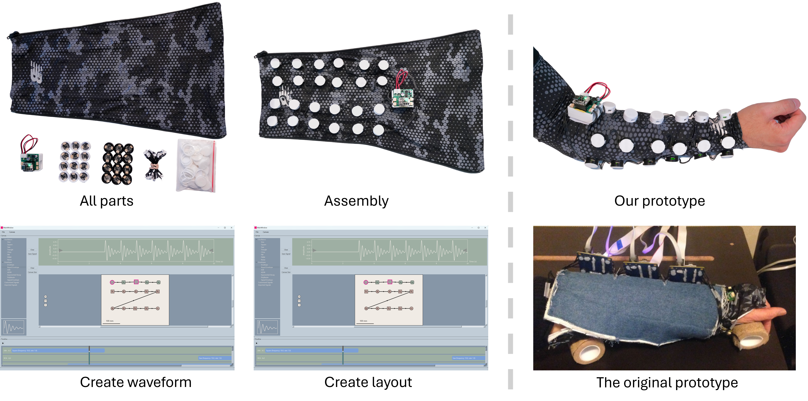
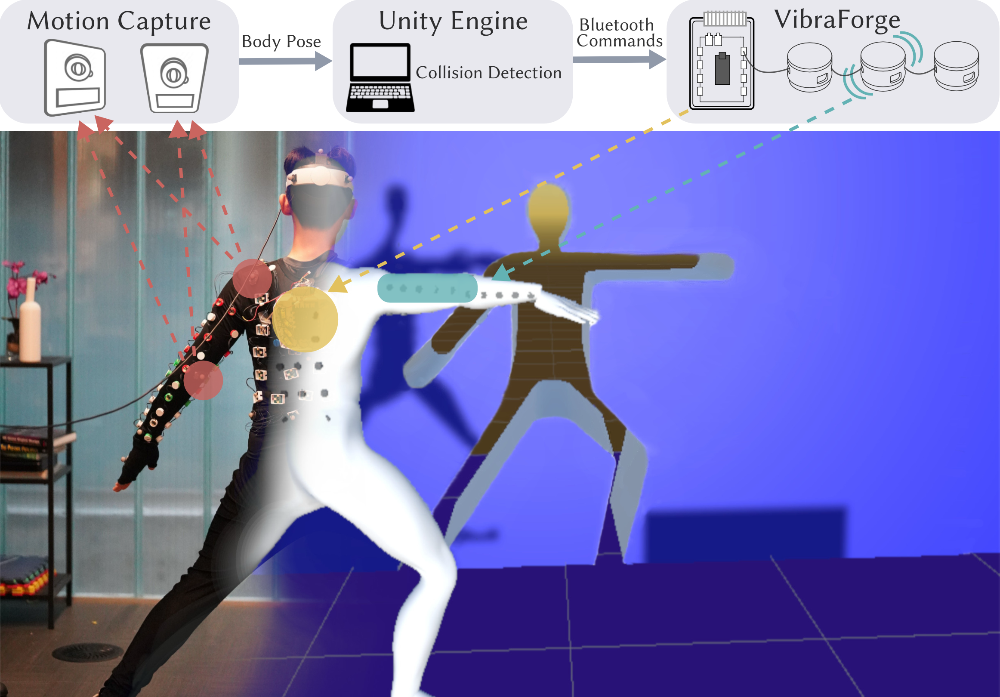

Examples & Applications

Phoneme Display
Mapping speech phonemes to tactile signatures.

VR Fitness Jacket
Impact cues, directional hits, rhythmic vibration patterns.

Drone Teleoperation (AeroHaptix)
Spatial perception via vibration — direction, distance, urgency.